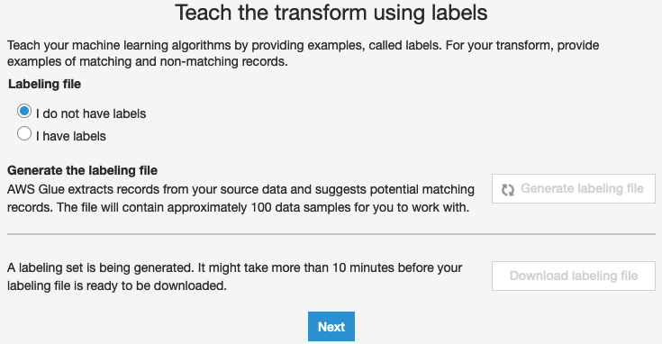

MACHINE LEARNING WITH GLUE
&
GLUE STUDIO NOTEBOOKS
Welcome to Part 5!
The Part 5 - Machine Learning with Glue & Glue Studio Notebooks - of the ETL Train The Trainer Workshop is going to cover the steps required to work with the Glue ML Transforms, more specifically, it will teach you about how to create, train (with labeling files), and write Glue ETL code that leverages the Glue's FindMatches ML Transform using Glue Studio Notebooks that you can further operationalize it into Glue Jobs.
0. (Pre Steps) - Understading & Setting up the Resources for ML Lab¶
To begin, you must first run the following commands in your Cloud9 Terminal to download the the ML Lab files from the Workshop's default S3 Bucket.
These commands will:
- Create the local directory structure for this lab in your Cloud9 Envirment
- Place each file in its respective folder.
- Re-upload all these files to your own S3 Bucket
- Building the required S3 Bucket Path structure for this lab:
mkdir -p /tmp/dsd/csv_tables/ml-lab/ml-customer-sampling /tmp/dsd/csv_tables/ml-lab/ml-customer-full /tmp/dsd/csv_tables/ml-lab/ml-labeling-file
aws s3 cp s3://ee-assets-prod-${AWS_REGION}/modules/31e125cc66e9400c9244049b3b243c38/v1/downloads/etl-ttt-workshop/ml-customer/sample-customer/sample-top-customer.csv /tmp/dsd/csv_tables/ml-lab/ml-customer-sampling/sample-top-customer.csv
aws s3 cp s3://ee-assets-prod-${AWS_REGION}/modules/31e125cc66e9400c9244049b3b243c38/v1/downloads/etl-ttt-workshop/ml-customer/top-customer/full-top-customer.csv /tmp/dsd/csv_tables/ml-lab/ml-customer-full/full-top-customer.csv
aws s3 cp s3://ee-assets-prod-${AWS_REGION}/modules/31e125cc66e9400c9244049b3b243c38/v1/downloads/etl-ttt-workshop/ml-customer/labeled-customer/top-customer-labeling-file.csv /tmp/dsd/csv_tables/ml-lab/ml-labeling-file/top-customer-labeling-file.csv
aws s3 cp s3://ee-assets-prod-${AWS_REGION}/modules/31e125cc66e9400c9244049b3b243c38/v1/downloads/etl-ttt-workshop/ml-notebook/ml-lab-notebook-job.ipynb /tmp/dsd/csv_tables/ml-lab/ml-notebook/ml-lab-notebook-job.ipynb
aws s3 cp --recursive /tmp/dsd/csv_tables/ml-lab/ s3://$BUCKET_NAME/etl-ttt-demo/ml-lab/
For this part of the ETL Train the Trainer Workshop, two crawlers have been created for you as part of the CloudFormation Template:
- The ml-sample-cust-crawler will create the S3-based table named ml_sample-customer which has much less amount of data but enought to be used as sample source data to train and label the FindMatches ML Transform you are going to create next.

- The ml-bootstrap-crawler will create the S3-based table named ml_dedup_sample_customer which is the full dataset that the future Notebook Job will try to deduplicate using the FindMatch ML Transform that you trained using the smaller ml_sample-customer dataset.

1. Creating and Training the Glue FindMatches ML Transform¶
Run both crawler to create the aforementioned tables. (Both tables' schema are exactly the same as the original RDS customer. They both contain 14 columns)
Once ml-bootstrap-crawler finish, click on ML Transforms menu, under the ETL section on the menu at the left. There, click on Add transform or the Create ML transform buttons.
1. On Configure transform properties page, name the Trasform as FindMatches. Also, set the IAM Role to AWSGlueServiceRole-etl-ttt-demo. Click Next
2. On Choose a data source page, select the table ml_sample_customer. Click Next.
3. On Choose a primary key page, select the table c_customer_id. Click Next.
4. On Tune transform page, under Recall vs. precision select the option Favor precision (0.9). Keep the option Balanced (0.5) selected. Click Next.
5. Review everything on the Review page and Click Finish to create the FindMatches ML Transform.
Now, it is time to teach your ML Transform. To do this, select the FindMatches Transform you just created, then click on the Action dropdown button and choose Teach Transform.
1. On Teach the transform using labels page, under Labeling file choose the option I don't have labels, then click on the Generate labeling file button.
2. On Generate labeling file pop-up window, choose to S3 Path where you want to store the generated label file. Navigate to s3://\${BUCKET_NAME}/etl-ttt-demo/output, then add /ml_gen_label_file/ and click Generate.

Note: You don't need to wait for this generating labeling file process to finish because you already downloaded a fully labeled file (during the first step of this lab) to be used here. Jump to step 3 or, if you have enough time, you can wait for it to finish, then click on Download labeling file and perform the labeling process yourself.
3. Click Next and, On the Upload labels, under Labeling file, now choose I have labels. Then click on Upload labeling file from S3 and navigate to the path: s3://\${BUCKET_NAME}/etl-ttt-demo/ml-lab/ml-labeling-file/top-customer-labeling-file.csv and click Upload, then click Next.
4. On Estimate quality metrics (optional) just click Complete Later to finish teaching your FindMatches ML Transform.
By selection your Transform, you can see at the bottom, in the Task type column, that the Label Uploading Process has succeeded.

2. Testing FindMatches Transform with Glue Studio Notebook¶
Note: Before start testing, you need to download the Notebook file you will use for this section of the lab. Go to your S3 Bucket s3://\${BUCKET_NAME}/etl-ttt-demo/ml-lab/ml-notebook/ and download the file ml-lab-notebook-job.ipynb to your local computer. You will need it next!
Now that the FindMatches Transform is trained, go to the AWS Glue Studio once again and click on Jobs in the left side menu. On the Jobs page, choose the Jupyter Notebook option and, under Options, choose the option Upload and edit an existing notebook and click on Choose File. Choose the file that has been shared with you which is located . Click on Create afterwards.
On the Notebook setup page, give the name to the Job as ml-lab-notebook-job and set the IAM to AWSGlueServiceRole-etl-ttt-demo. Click on Start notebook job button to create a Jupyter Notebook from an unpload notebook file.
Once the Notebook is fully ready, copy the following code and replace the Cell [1] with it. Afterwards, click on the Play button ( |> ) at the top-center-left of the notebook interface: ---DO NOT click on the orange run button on the far left---
Cell [1] (replace the existing Cell [*] ):
%glue_version 2.0
%idle_timeout 60
import sys
from awsglue.transforms import *
from awsglue.utils import getResolvedOptions
from pyspark.context import SparkContext
from awsglue.context import GlueContext
from awsglue.job import Job
from awsglueml.transforms import FindMatches
sc = SparkContext.getOrCreate()
glueContext = GlueContext(sc)
spark = glueContext.spark_session
job = Job(glueContext)

Once you see a message saying "Session XXXX-XXXX-XXXX has been created", run the Cell [2]:

You should see the ml_to_dedup_top_customer table's schema in the above output.
Before you can run the Cell [3], replace the \${YOUR_TRANSFORM_ID} placeholder for the Transform ID of the the FindMatches Transform that you created. Go back to your Glue Console and, under the Details tab copy the Transform ID

Once Transform ID is correctly replaced, run the Cell [3]. (This Cell should take about 6 minutes to finish!)

You should see the output displaying the message: "Duplicate count of matching IDs : 530"
Also, while this is running, you can go to your Glue Console and see, in the History Tab that a new task for your FindML Transform will start to run thanks to the line of code you just executed.
3. Validating and Deploying the FindMatches Glue Job¶
Now, to validate the FindML Transform results, simply run the Cell [4]:

You should also see that the FindMatches Transform has added another column named match_id to identify matching records in the output. That means that rows with the same match_id are considered matching records.
To confirm that the FindML Transform worked, you can actually see that from the 10 rows returned in the output 5 are duplicates. This proves that the FindMatches ML Transform is working!.
Now, let's leverage the match_id column created by the FindMatches Transform to eliminate the duplicates from the dataset. Run the Cell 5:

Notice how the duplicates are now gone. That means that you were able to create a code that leverages the a ML Transform that you created to help you find and eliminate duplicates in your dataset.
You can now operationalize this code into a Glue Studio Job, but first, you must run the last cell, the Cell 6, in order to sink the output data into the S3 Bucket.
This Bucket will be used in the next lab (Part 5) to act as a shared data repository where the Data Analytics team uploads their files for further Preparation & Analysis.
Replace the \$BUCKET_NAME placeholder in the last cell with the following S3 Bucket path:
s3://${BUCKET_NAME}/etl-ttt-demo/output/data_analytics_team_folder/top-customers/
TIP: Run the following command in your Cloud9 Terminal to build the full path you need:
echo "s3://${BUCKET_NAME}/etl-ttt-demo/output/data_analytics_team_folder/top-customers/"
Run the code to create your deduplicated version of the full top customer dataset. Once the code in the Cell 6 finish, check the S3 Bucket Path to confirm the file is there.
TIP: Optionally, you can also run S3 Select queries on the data generated to validate as seen in the picture below:

Finally, Save your job and download the notebook by clicking on Download Notebook button at the top-right of the Glue Studio Notebook Page in order keep a copy of the notebook locally on your computer for safety.
You have now concluded the Part 5 - Machine Learning with Glue & Glue Studio Notebooks. Once you are ready move to the Part 6 - Workflow Orchestration with AWS Step Function.